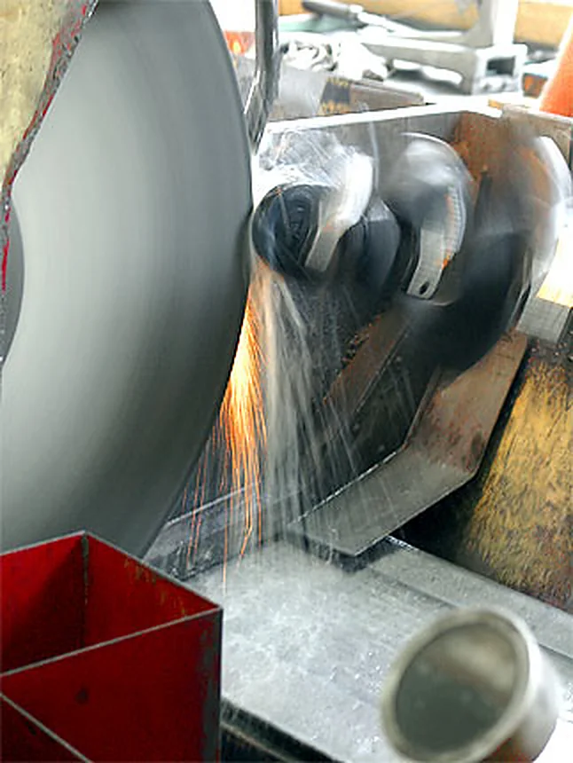
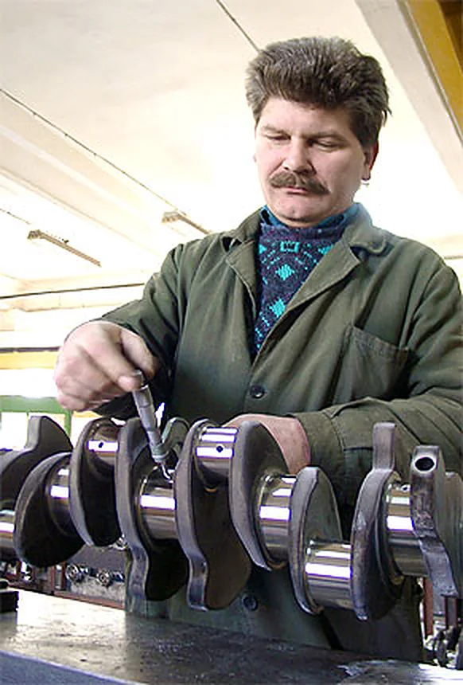
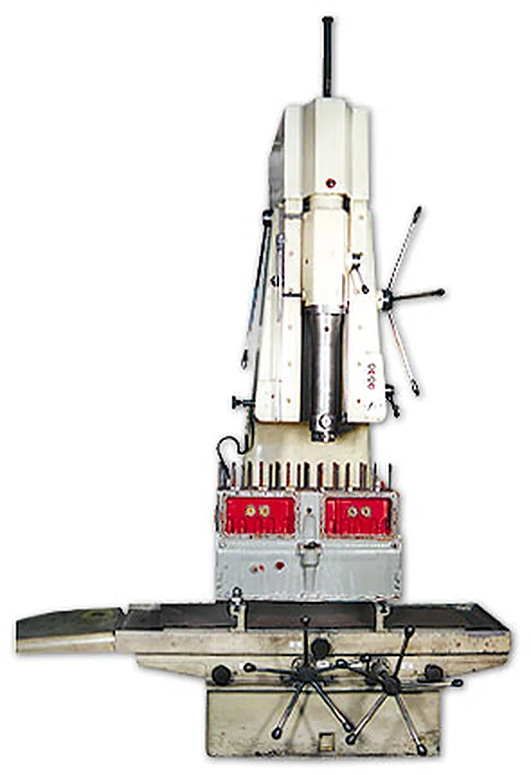
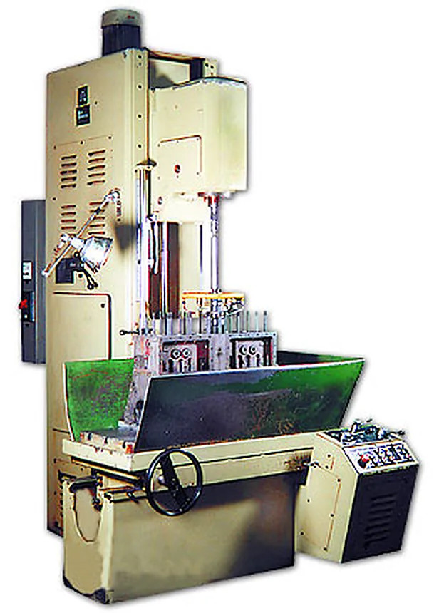
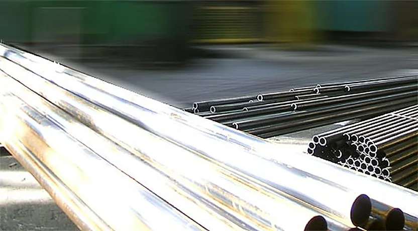
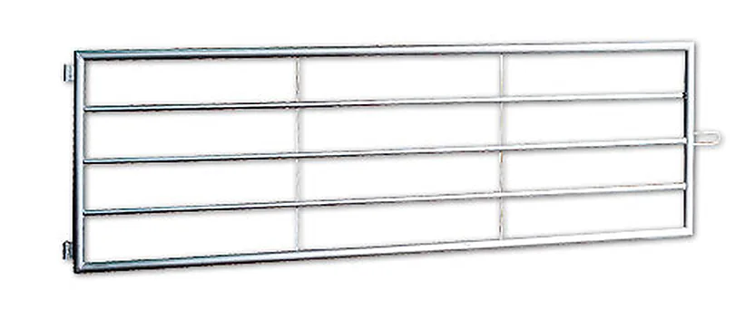
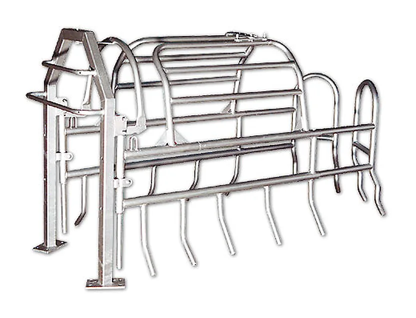
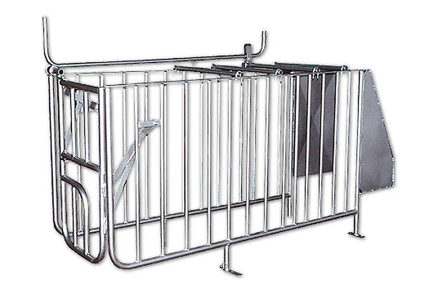
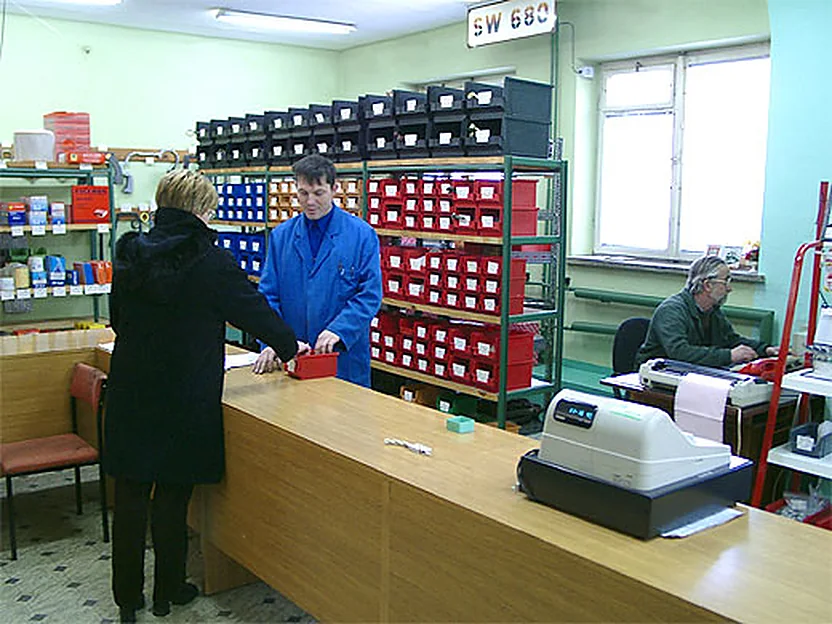
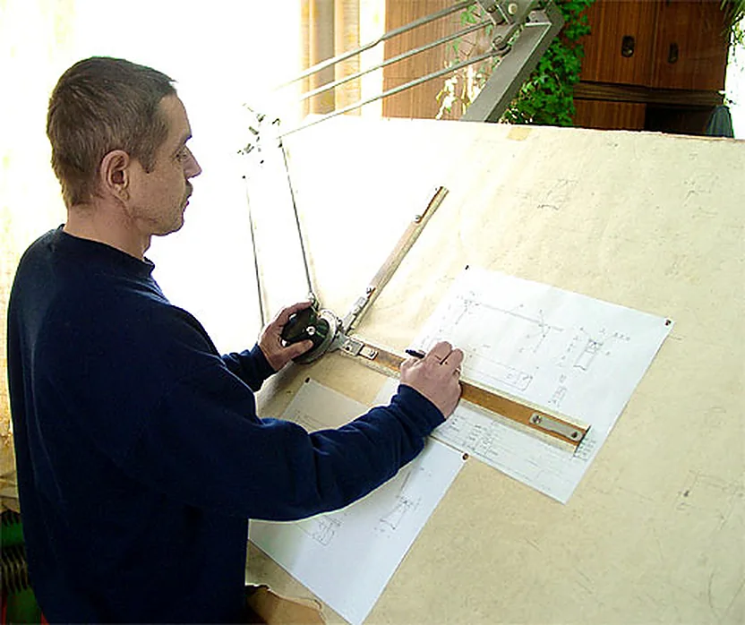

Osie i wały napędowe
Produkcja osi i wałów napędowych oraz innych elementów na zamówienie, według dokumentacji Klienta.
Zakłady Naprawy Samochodów w Boguchwale pod Rzeszowem: remonty samochodów ciężarowych, autobusów i maszyn budowlanych, regeneracja wałów i osi, obróbka skrawaniem oraz wyroby ze stali dla rolnictwa.
Ponad 50 lat tradycji, w Grupie EKO-KARPATY od 2000 roku


Naszą podstawową usługą są remonty i naprawy samochodów ciężarowych i dostawczych. Regenerujemy też podzespoły: silniki, skrzynie biegów, mosty napędowe i wały korbowe.


Spawanie w osłonie proszku lub gazu, metodami TIG i MIG.
Wyroby ze stali węglowej i nierdzewnej: osie i wały napędowe, elementy z rur i kształtowników, wyposażenie do hodowli zwierząt oraz produkty na indywidualne zamówienie.
Produkcja osi i wałów napędowych oraz innych elementów na zamówienie, według dokumentacji Klienta.

Konstrukcje i elementy z rur oraz kształtowników stalowych, ze stali węglowej i nierdzewnej.

Do zamknięcia wygrodzeń łąk i pastwisk. Rury stalowe cynkowane ogniowo.
Także bramy z siatką o oczku 10 x 10 cm do zagród dla owiec oraz bramy rozsuwane.

Odizolowanie loch po oprosieniu, bezpieczeństwo prosiąt i odpoczynek lochy. Rury ocynkowane ogniowo, łatwe utrzymanie czystości.

Ściany boczne proste i skośne, drzwiczki z mechanizmem otwierania, łączone rurami i elementami złącznymi. Stal ocynkowana ogniowo.

Sprzedaż hurtowa i detaliczna. Dostarczymy asortyment według Państwa zapotrzebowania.
Sklep czynny poniedziałek - piątek, 7:00 - 17:00
ZNS Sp. z o.o. ma za sobą ponad 50 lat tradycji. Doświadczenie przekłada się na poziom usług i wyrobów, a nasza kadra należy do najbardziej wykwalifikowanych na Podkarpaciu.
Od 2000 roku działamy w Grupie Kapitałowej Podkarpackie Centrum Produkcyjno-Wdrożeniowe EKO-KARPATY, razem z zakładami Tarnowiec, Technitex i Enviro.
Zapraszamy odbiorców i kooperantów do trwałej współpracy. Nasz personel zawsze służy radą i pomocą.

Opisz, co trzeba naprawić albo wykonać. Oddzwonimy z terminem i wyceną.
ZNS Sp. z o.o.
ul. Techniczna 2
36-040 Boguchwała